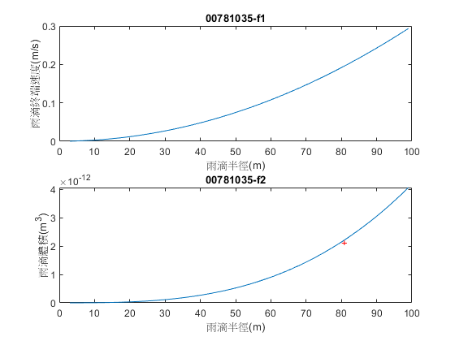

clear;clc;clf;
a=randi([1,100],[1,100]);
vt1=(9.8*(a*10^-6).^2*(997-1.204))/18/(1.81*10^-5);
v=4*pi*((a*10^-6).^3)/3;
fprintf('雨滴半徑最小值:%g \n雨滴半徑最大值:%g \n',min(a),max(a))
fprintf('雨滴終端速度最小值:%g \n雨滴終端速度最大值:%g \n',min(vt1),max(vt1))
fprintf('雨滴體積最小值:%g \n雨滴體積最大值:%g \n',min(v),max(v))
b=sort(a)
vt2=(9.8*(b*10^-6).^2*(997-1.204))/18/(1.81*10^-5);
subplot(2,1,1)
plot(b,vt2)
title('00781035-f1')
xlabel('雨滴半徑(m)')
ylabel('雨滴終端速度(m/s)')
v2=4*pi*((b*10^-6).^3)/3
subplot(2,1,2)
plot(b,v2)
title('00781035-f2')
xlabel('雨滴半徑(m)')
ylabel('雨滴體積(m^3)')
v80=v2(80)
text(b(80),v80,'+','color','r')
saveas(gcf,'00781035_ex05.jpg','jpg')
雨滴半徑最小值:3
雨滴半徑最大值:99
雨滴終端速度最小值:0.00026958
雨滴終端速度最大值:0.293573
雨滴體積最小值:1.13097e-16
雨滴體積最大值:4.06438e-12
b =
Columns 1 through 13
3 3 4 4 9 10 11 12 12 14 17 18 19
Columns 14 through 26
19 20 20 21 23 23 23 24 24 24 24 26 27
Columns 27 through 39
27 27 30 31 32 32 34 34 36 37 38 40 41
Columns 40 through 52
43 44 44 44 46 48 48 48 49 49 49 50 51
Columns 53 through 65
51 51 53 54 55 56 58 58 59 60 61 61 62
Columns 66 through 78
63 63 65 66 68 68 70 72 72 72 73 74 75
Columns 79 through 91
78 80 81 81 82 85 86 88 89 89 90 91 91
Columns 92 through 100
91 92 93 93 94 97 98 98 99
v2 =
1.0e-11 *
Columns 1 through 7
0.0000 0.0000 0.0000 0.0000 0.0003 0.0004 0.0006
Columns 8 through 14
0.0007 0.0007 0.0011 0.0021 0.0024 0.0029 0.0029
Columns 15 through 21
0.0034 0.0034 0.0039 0.0051 0.0051 0.0051 0.0058
Columns 22 through 28
0.0058 0.0058 0.0058 0.0074 0.0082 0.0082 0.0082
Columns 29 through 35
0.0113 0.0125 0.0137 0.0137 0.0165 0.0165 0.0195
Columns 36 through 42
0.0212 0.0230 0.0268 0.0289 0.0333 0.0357 0.0357
Columns 43 through 49
0.0357 0.0408 0.0463 0.0463 0.0463 0.0493 0.0493
Columns 50 through 56
0.0493 0.0524 0.0556 0.0556 0.0556 0.0624 0.0660
Columns 57 through 63
0.0697 0.0736 0.0817 0.0817 0.0860 0.0905 0.0951
Columns 64 through 70
0.0951 0.0998 0.1047 0.1047 0.1150 0.1204 0.1317
Columns 71 through 77
0.1317 0.1437 0.1563 0.1563 0.1563 0.1630 0.1697
Columns 78 through 84
0.1767 0.1988 0.2145 0.2226 0.2226 0.2310 0.2572
Columns 85 through 91
0.2664 0.2855 0.2953 0.2953 0.3054 0.3157 0.3157
Columns 92 through 98
0.3157 0.3262 0.3369 0.3369 0.3479 0.3823 0.3942
Columns 99 through 100
0.3942 0.4064
v80 =
2.1447e-12
